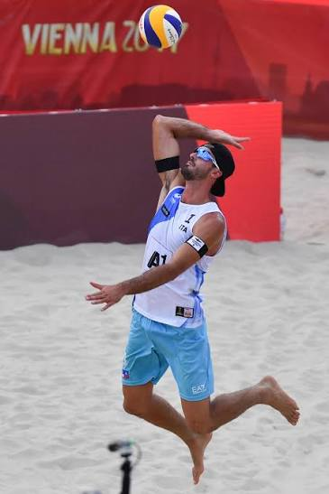

Il Ranking Mondiale FIVB (Fédération Internationale de Volleyball) è il sistema matematico ufficiale utilizzato per classificare le migliori coppie di beach volley al mondo. Non si tratta di un semplice accumulo infinito di vittorie, ma di un sistema dinamico e meritocratico, progettato per premiare la costanza e i risultati recenti al massimo livello agonistico.
La regola d'oro del ranking è la Finestra dei 365 giorni. La classifica prende in considerazione esclusivamente i tornei giocati nell'ultimo anno solare. Per evitare che le squadre siano incentivate a giocare un numero estenuante di tornei a discapito della qualità, il calcolo finale somma solamente i migliori 8 risultati ottenuti da una coppia in questo arco di tempo. Una volta superato l'anno di distanza, i punti del torneo più vecchio "scadono" e la classifica si aggiorna automaticamente.
I punti non vengono assegnati in modo casuale, ma dipendono dall'importanza della competizione. Il circuito mondiale, noto come Beach Pro Tour, è strutturato su tre livelli principali:
- Tornei Elite16: Il livello più alto e spettacolare in assoluto. Vi partecipano esclusivamente le migliori 16 squadre del pianeta. La vittoria in queste tappe garantisce il massimo dei punti regolari (solitamente 1200 punti).
- Tornei Challenge: Il livello intermedio. Sono tornei altamente competitivi in cui le squadre cercano di accumulare i punti necessari (circa 800 per la vittoria) per scalare la classifica e accedere alla fascia Elite.
- Tornei Futures: Il livello di ingresso, pensato per i giovani talenti e le nuove formazioni (circa 400 punti per il primo posto).
A questo circuito si aggiungono i Grandi Eventi: i Campionati Mondiali (ogni due anni) e i Giochi Olimpici (ogni quattro anni). Questi tornei eccezionali offrono un montepremi di punti nettamente superiore a qualsiasi altra competizione, potendo stravolgere l'intera classifica in un solo weekend.
Mantenere un punteggio elevato è di importanza vitale per gli atleti. Il ranking determina infatti il Seeding (le Teste di Serie) all'interno dei gironi dei tornei, permettendo ai più forti di avere percorsi inizialmente più agevoli. Soprattutto, la classifica mondiale è il criterio primario per la Qualificazione Olimpica: solo chi resta costantemente in vetta riesce a staccare il biglietto per rappresentare la propria nazione ai Giochi.
